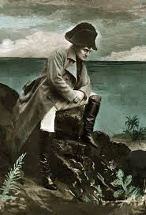

| Inico | Logros | Galeria | Contacto |
Logros |
|||
|  | |||
Napoleon Bonaparte achieved profound transformations in the political and social structures of France and much of Europe. One of his greatest accomplishments was the creation of the Napoleonic Code, a unified set of laws that established modern principles such as equality before the law, property rights, and religious freedom. He also reorganized public administration, modernized education through the establishment of lycées, and strengthened the economy with fiscal reforms and the creation of the Bank of France. In the military sphere, Napoleon built a vast empire thanks to innovative strategies and the effectiveness of his army. His victories in battles such as Austerlitz, Jena, and Wagram made him one of the most brilliant military commanders in history. He also spread revolutionary ideas across Europe, weakening feudal structures and promoting more modern systems of government, leaving a lasting impact even after his fall. |
|||